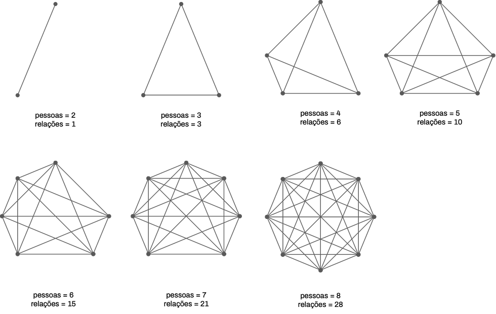
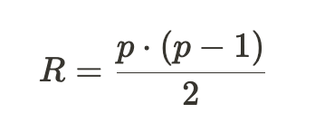
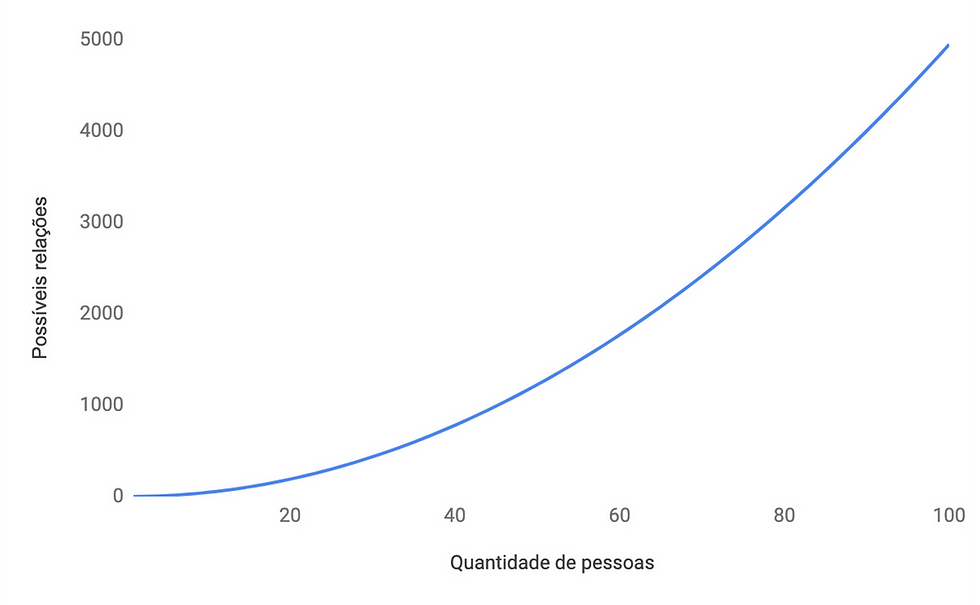

Complexidade Cultural: Como as nossas limitações cognitivas afetam a cultura organizacional
2022-03-25
Até o fim do ensino fundamental, estudei em uma escola pequena e acolhedora, mas que não tinha ensino médio, me forçando a sair aos 14 anos. Fui para uma escola muito maior, onde haviam cerca de oito salas por série. Foi como ser jogado numa selva. Vi uma diversidade de perfis e grupos de afinidades tão grande que eu mesmo comecei a me perguntar se eu conseguiria pertencer a algum. Assim como muita gente, foi um período estranho, com uma constante sensação de inadequação e uma dificuldade de me sentir pertencido.
Acontece que isso não é por acaso. O antropólogo Robert Dunbar descobriu que nós humanos temos uma limitação cognitiva em nossa capacidade de sustentar relações e que, em média, esse limite é de 150 pessoas. Isso significa que, em média, você consegue manter contato com 150 pessoas diferentes , variando entre diferentes níveis de proximidade (amigos próximos, amigos não tão próximos, colegas e conhecidos, por exemplo). Mais do que isso possivelmente vai gerar algum tipo de sobrecarga mental ou emocional.
Dentro de uma empresa, isso não é muito diferente. Também são pessoas interagindo, com a diferença que, além das relações pessoais que se criam no trabalho, as pessoas se relacionam porque isso é necessário para executar funções específicas. Por isso, um dia me peguei pensando sobre como o crescimento de uma empresa afeta a maneira como as pessoas se relacionam e como isso afeta a cultura como um todo.
Pense por exemplo numa empresa que começa com você e mais uma pessoa, sua sócia. Nesse momento, a única relação existente é entre você e ela. Quando chega uma terceira pessoa para trabalhar com vocês como colaboradora, vocês passam a ter três relações existentes: entre você e sua sócia, você e a colaboradora e sua sócia e essa colaboradora. Mais ou menos assim:
A medida que a empresa vai crescendo, cresce também a quantidade de possíveis relações existentes ali, nessa proporção:

Imagine o tamanho desse emaranhado quando você começa a ter 10, 50 ou 100 pessoas juntas (a título de curiosidade, 100 pessoas fazem com que existam 4.950 possíveis relações na empresa). Aqui a complexidade implícita começa a se revelar.
Pegando esses números, é possível definir uma equação que rege a quantidade de possíveis relações existentes numa organização:

Onde R é a quantidade de possíveis relações e p a quantidade de pessoas. A matemática aqui não é a coisa mais importante, então se você não se sente muito à vontade lendo um texto que tem uma equação no meio, vamos tentar ver como fica isso num gráfico (se ainda continua sendo muita matemática para você, espera só mais um pouco):

Na perspectiva das empresas, isso demonstra o quão pouco visível é a complexidade por trás de grandes equipes e os efeitos que isso tem na maneira como as organizações são construídas e lideradas. Para facilitar nossa vida, vamos considerar que complexidade é um estado no qual as relações de causa e efeito são incompreensíveis ou no mínimo muito difíceis de serem identificadas. Em outras palavras, não dá pra entender direito o que causa o quê.
Se usarmos a quantidade de possíveis relações como um indicativo do nível de complexidade cultural, começa a ficar mais fácil entender porque cultura organizacional ainda é um assunto desafiador . Por exemplo, se o seu time crescer de 10 para 20 pessoas, a quantidade de pessoas obviamente dobrou, mas a quantidade de possíveis relações (ou seja, a complexidade cultural) mais do que quadruplicou (passou de 45 para 190). Como se já não fosse o bastante, essa diferença cresce com o aumento da equipe também.
E aí você deve estar se perguntando: quais os efeitos práticos disso?
Bom, você já deve ter percebido que a maioria das empresas cria subdivisões internas: departamentos, setores ou outros termos são utilizados para organizar as pessoas e o trabalho, combatendo a complexidade por meio de estruturas organizacionais. Isso ajuda a reduzir a quantidade de relações possíveis, fazendo com que as pessoas foquem em interagir com quem elas precisem interagir, de forma a trazer eficiência para os processos.
O lado ruim dessa prática é que muitas vezes os departamento se tornam silos, fechando as pessoas dentro de círculos organizacionais nada diversos e tendo como efeitos colaterais a incapacidade de aprender e inovar, a falta de empatia com trabalhos e pessoas de perfis diferentes e a dificuldade em se ter uma comunicação interna integrada. Tudo isso gera desafios culturais quando as lideranças começam a perceber o desalinhamento, o baixo engajamento e os ruídos na comunicação. Esses problemas agem na estratégia da mesma forma que uma erva daninha age numa plantação: a produtividade vai caindo e a capacidade de atingir objetivos desafiadores vai reduzindo.
Essa ambiguidade entre querer integrar as pessoas (menos estrutura e mais relações) e querer integrar o trabalho (mais estrutura e menos relações) faz com que se criem polaridades nas filosofias de liderança . Umas acreditam que a busca por eficiência no trabalho vai gerar os melhores resultados; outras acreditam que a busca por senso de pertencimento é que dá o melhores retornos. Não há resposta certa, mas entender como a cultura se movimenta pode ser um bom indicativo para entender qual a dosagem de cada polo desse espectro.
A partir disso, a já tradicional prática de se definir diretrizes culturais pode se tornar mais assertiva. Se tudo der certo a empresa e o tamanho da equipe vão crescer, crescendo também a complexidade cultural. Logo, entender quais princípios e valores irão guiar esse crescimento continua sendo uma máxima, assim como um entendimento do propósito e de como a empresa serve ao mundo. Quanto antes esses elementos estão explícitos e alinhados, melhor. Se quiser se aprofundar nisso, recomendo o artigo que escrevi para a revista HSM Management sobre engajamento estratégico .
Para deixar a porta aberta para uma próxima conversa, é importante considerar que as novas relações de trabalho (trabalho remoto, relações empregatícias fluidas, dentre outros) que tem surgido provavelmente estão afetando esse processo de desenvolvimento da cultura. Vamos deixar essa reflexão para um próximo artigo.